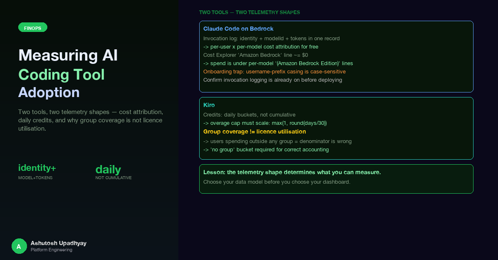

Two tools, two telemetry shapes — and what we learned about cost attribution, daily credits, and why "group coverage" is not "licence utilisation."
I filtered AWS Cost Explorer on SERVICE = "Amazon Bedrock" expecting to see our Claude Code spend for the month. The result came back as the equivalent of a rounding error — essentially zero. I briefly concluded that the usage must be missing, billed to a different account, or routed through a reseller arrangement. None of those were true. The usage was there and correctly attributed. I was looking at the wrong service line entirely.
That confusion was the first of several metric-definition surprises encountered while building a unified analytics dashboard for two AI coding assistants deployed across an engineering organisation: Claude Code running against Amazon Bedrock, and Kiro, a purpose-built AI IDE assistant with its own credit-based usage model. The two tools route through different telemetry pipelines, store data in different shapes, and require different aggregation logic before their numbers become trustworthy. This post documents those differences and the specific traps that made obvious-looking queries produce wrong answers.
Claude Code, when configured to use Amazon Bedrock as its model provider, routes every completion request through the Bedrock API. Bedrock model invocation logging records each call as a structured JSON entry in a CloudWatch log group. The crucial property of this log structure is that the caller's identity, the model identifier, and the token counts for that call all appear in the same record. Per-user and per-model attribution does not require joining two separate sources; it is built into the log format.
Kiro operates differently. It is a managed SaaS tool with its own credit-based billing. Each user's daily activity is distilled into a credit report: a row per user per day containing the date, the user's identity, total credits consumed, and model message counts. The reports are delivered as daily files rather than as a continuous event stream.
identity.arn, modelId, token counts in one record/aws/bedrock — one JSON entry per invocationThe two pipelines share no infrastructure. The key structural difference: Bedrock attribution is record-level (identity + model + tokens in one entry); Kiro attribution is file-level (one daily file per user, credits pre-aggregated by the provider).
The pipelines share no infrastructure and require different extraction patterns, different cadence assumptions, and different approaches to group-level attribution. Getting the numbers right means understanding both shapes independently before trying to report on them together.
Bedrock model invocation logging, when enabled for an account, writes one structured JSON record per API call to a configured CloudWatch log group. Each record contains three things that matter for attribution:
identity.arn — the IAM ARN of the caller. For an engineer using Claude Code, this is the ARN of the assumed role or user that issued the Bedrock API call.modelId — the Bedrock model identifier, e.g. us.anthropic.claude-sonnet-4-5-20251101-v1:0.Because all three appear together, grouping by (identity.arn, modelId) and summing token counts produces a complete per-user × per-model attribution table from a single log source. There is no secondary join with a billing table or a user directory. A CloudWatch Logs Insights query that captures this looks like:
# Per-user × per-model token summary from Bedrock invocation logs
fields identity.arn, modelId
| filter @logStream like /ModelInvocationLog/
| stats
sum(inputTokenCount) as input_tokens,
sum(outputTokenCount) as output_tokens,
sum(cacheReadInputTokenCount) as cache_read_tokens,
count() as invocations
by identity.arn, modelId
| sort by input_tokens descThe resulting table gives you one row per (user, model) pair for the query window, with token counts that can be multiplied by per-model published prices to produce a cost estimate. Because the invocation log records the model at the time of the call, you get a natural audit trail when users switch between model versions — Sonnet versus Haiku versus Opus — without any configuration change on the analytics side.
A raw caller identity ARN like sts::ACCOUNT_ID:assumed-role/SomeRoleName/firstname.lastname is not a useful dashboard label. The extractor strips it down to a readable username by matching against a configured list of account-specific prefixes. Because a real account's usernames frequently use mixed casing — the same person's ARN might appear with an uppercase prefix in some log entries and a lowercase one in others — the prefix list must cover both variants:
def simplify_arn(arn: str, prefix_list: list[str]) -> str:
"""Extract a readable username from a caller ARN.
prefix_list entries should be ordered longest-first and must cover
all casing variants, e.g. ["ACCOUNT-users-", "account-users-"].
"""
# The username is the final path segment of the ARN
username = arn.rsplit("/", 1)[-1] if "/" in arn else arn
for prefix in prefix_list: # longest match first
if username.startswith(prefix):
return username[len(prefix):]
return username # return as-is if no prefix matchesCase sensitivity bites in two places. The startswith match is case-sensitive, and if the same account has users whose ARN prefixes appear in mixed casing across log entries, a single-casing prefix list silently leaves some users labelled with their full ARN rather than a clean display name. The fix is to list both casings explicitly, longest first. The impact is cosmetic only — per-user totals aggregate on the full ARN, not the display name — but it affects every label in the dashboard. When onboarding an additional account, always verify the actual casing distribution in the log before finalising the prefix list.
The opening confusion — filtering Cost Explorer on SERVICE = "Amazon Bedrock" and finding essentially zero spend — is a naming issue built into how AWS bills Bedrock usage.
Model inference charges do not appear under the "Amazon Bedrock" service line. They appear under per-model service lines, each named <Model Name> (Amazon Bedrock Edition). In a typical active month, the ratio looks something like this:
| Cost Explorer service line | Share of Bedrock-related spend |
|---|---|
Claude Sonnet X (Amazon Bedrock Edition) | ~60–70% |
Claude Opus X (Amazon Bedrock Edition) | ~20–30% |
Amazon Bedrock | Essentially zero (<0.1%) |
The "Amazon Bedrock" parent line covers non-inference charges — knowledge base storage, guardrails, retrieval requests — and carries a negligible share of spend in workloads dominated by model calls. A FinOps dashboard that reads model spend from the SERVICE = "Amazon Bedrock" line is reporting effectively nothing while the real spend accumulates invisibly elsewhere.
The correct approach is to group Cost Explorer by SERVICE for the billing period and then sum every line whose name ends in (Amazon Bedrock Edition):
aws ce get-cost-and-usage \
--time-period Start=YYYY-MM-01,End=YYYY-MM-DD \
--granularity MONTHLY \
--metrics UnblendedCost \
--group-by Type=DIMENSION,Key=SERVICE \
--query 'ResultsByTime[0].Groups[?contains(Keys[0], `Amazon Bedrock Edition`)]'A side benefit: the model name in each service line tells you which models are actually in use across the account — cheaper than grepping configuration files, and accurate in the way that only billing data can be.
Why this matters for multi-model cost visibility: when an organisation deploys multiple AI workloads in the same account — a coding assistant, a research agent, an API-facing service — the per-model service lines immediately tell you which workload is the dominant spender, even before any tagging strategy is in place. If Claude Sonnet accounts for 80% and Opus for 20%, and you know Claude Code primarily uses Sonnet while your research pipeline uses Opus, the cost split follows without additional joins.
Kiro's daily report files are incremental. Each file records what a user spent on that calendar day. Credits do not carry forward; they reset at the start of each day's file. This means summing credits across any date range is safe — you are summing independent daily increments, not re-counting a running total.
The complexity arises when you compare a user's total spending against their overage allowance. The allowance is defined per month — a fixed credit cap that applies to usage above the base subscription level. When the analytics window is a rolling 30 or 90 days rather than a fixed calendar month, you need to scale that monthly cap to match the window.
An intuitive implementation counts the distinct calendar months that appear in the window:
import pandas as pd
# BUGGY: counting distinct calendar months
def months_in_window_naive(dates: pd.Series) -> int:
return dates.dt.to_period("M").nunique()
# Window examples:
# 2026-09-01 → 2026-09-30: 1 distinct month ✓ correct
# 2026-08-15 → 2026-09-13: 2 distinct months ✗ cap is doubled for a 30-day window
# 2026-09-15 → 2026-10-14: 2 distinct months ✗ same problem, different datesAny 30-day window that straddles a month boundary returns 2. The monthly cap doubles. A user who spent their full monthly allowance over 30 consecutive days appears to have used only 50% of capacity. The bug is invisible when the window is calendar-aligned (starting on the first of a month) but affects every relative window — "last 30 days", "last 90 days" — which is how rolling analytics dashboards almost always define their windows.
The fix replaces calendar-month counting with proportional scaling:
def months_in_window(days: int) -> int:
"""Scale a monthly cap to the selected window length.
Uses proportional rounding rather than distinct calendar months,
so a 30-day window always applies exactly 1× the monthly cap
regardless of which dates it covers.
max(1, ...) prevents a zero result for windows shorter than 15 days.
"""
return max(1, round(days / 30))With this formula:
max(1, round(30/30)) = 1× cap — regardless of month boundariesmax(1, round(45/30)) = 2× capmax(1, round(90/30)) = 3× capmax(1, round(14/30)) = max(1, 0) = 1× cap — at least one month's allowanceThe non-obvious failure mode: the bug disappears on any window that starts on the first of a month, because a 30-day span from the 1st stays within one calendar month. A test that always validates against month-aligned windows will pass consistently and never expose the regression. The failure only appears in production where users navigate to relative windows like "last 30 days" from a mid-month date — which is the normal way people use a rolling dashboard.
The UI benefits from showing the cap calculation explicitly. An amber banner for non-30-day windows, displaying both the per-month cap and the scaled window cap, eliminates the confusion that arises when a user sees their "overage" number and does not understand what denominator the percentage was computed against.
Once you have per-user Kiro credit data, the natural next question is: what fraction of the tool's assigned users are actually using it? The intuition is straightforward — join the user list from your identity provider against the usage data, and compute the ratio of active users to assigned users.
Here is what the data showed once we separated "active" from "assigned".
The "assigned users" denominator was sourced from AD security groups whose names correspond to the tool being measured. Members of those groups were treated as the licence population. The coverage ratio was then:
coverage = (users in a group with >= 1 credit in window)
/ (distinct members across all relevant groups)| Window | Coverage ratio | Active users in no group |
|---|---|---|
| 30 days | 61.0% | present (small share) |
| 90 days | 69.8% | present (grows with window) |
The "active users in no group" column is the critical one. A small share of active users spent credits while appearing in none of the relevant groups; with a longer window, that share grows. These users demonstrably hold a licence — they are spending credits — but they are absent from every group, so they are not in the denominator at all.
Group coverage is not licence utilisation — define the denominator explicitly and state the window. A group-based denominator counts only people in groups, so define it explicitly and document what it includes and excludes.
Never call this ratio "licence utilisation." It is group coverage — the fraction of known group members who used the tool in the window. Licence utilisation would require a confirmed list of licence holders, which identity provider group membership cannot provide if some users hold licences through paths other than group assignment. The distinction matters when reporting to stakeholders who may act on the number: "61% utilisation" implies 39% of paid licences are wasted, which overstates the waste when the denominator covers only group-assigned members.
The AD mail casing trap and multi-group membership accounting are covered in detail in post #16 on multi-tenant FinOps data joins.
61.0% and 69.8% are not two measurements of the same thing. They measure different populations — 30-day active users versus 90-day active users — against the same denominator. A user who used the tool once in the last quarter but not in the last month appears in the 90-day numerator but not the 30-day one. Reporting either number without the window creates apparent contradictions when someone checks the figure at a later date or compares it to a figure from a different report. Every dashboard cell that shows a coverage ratio should display its window alongside the number.
The explicit "no group" bucket. The dashboard shows a dedicated "(No group)" row in the group breakdown, listing the count and total credits for users who appear in the usage data but in no relevant group. This makes the denominator gap visible rather than merged into an "other" category. When the "no group" population grows — which can happen when a new team starts using the tool without going through the formal group assignment process — the bucket gives immediate visibility rather than the coverage ratio silently improving for the wrong reason.
Adding a new account to the Bedrock analytics pipeline involves two things that deserve explicit attention.
Confirm that invocation logging is already enabled before creating anything. Run aws bedrock get-model-invocation-logging-configuration --region <region> in the target account. In at least one account we onboarded, invocation logging had already been active for well over a year — auto-configured during an earlier Bedrock setup, with a very long log retention period. Attempting to create logging configuration in that account would have been a no-op at best. The check takes ten seconds and avoids confusion about whether new log data is the result of a fresh setup or pre-existing data.
Username prefix matching is case-sensitive in two separate implementations. The extractor that reads CloudWatch logs uses a startswith check to strip ARN prefixes to readable usernames. An independent copy of the same logic exists in the API layer that serves the dashboard. Real accounts mix casing: the same underlying population may appear as ORG-ACCOUNT-firstname.lastname in 83% of log entries and org-account-firstname.lastname in the remainder, because different mechanisms created the IAM identities at different times. Always list both casings in the prefix configuration, and list longer variants before shorter ones so a more specific prefix wins over a partial match:
# prefix_list for an account with mixed-casing usernames
username_prefixes:
- "ORG-ACCOUNT-users-" # uppercase variant — longest first
- "org-account-users-" # lowercase variant
- "ORG-ACCOUNT-" # shorter fallback
- "org-account-"Extra non-matching entries in the list are free — they are simply skipped — so listing both casings is a complete fix rather than a heuristic. Our landing zone requires a permissions boundary on new IAM roles; that is worth verifying in the target account before attempting role creation.
After building both pipelines, the combined dashboard answers three distinct questions that were previously answered with guesswork:
Who is spending what on which models? The Bedrock per-user × per-model table answers this directly, derived from log records rather than from cost allocation tags, which tend to be incomplete in early-stage deployments. The Cost Explorer per-model service lines answer the complementary question: which models are active across the whole account, and in roughly what proportion.
How active is Kiro relative to the assigned population? The group coverage ratio at 30 and 90 days answers this, noting that the denominator covers only explicitly group-assigned members. The "no group" bucket makes that boundary explicit rather than hiding it in the coverage number.
Is overage usage concentrated or distributed? Comparing per-user credit totals against the scaled cap — using max(1, round(days/30)) as the multiplier — identifies which users have exceeded their monthly allowance over the selected window, without the boundary artifact that inflates or deflates the cap depending on where month boundaries fall.
None of these are difficult to measure once the telemetry shape is understood. The difficulty is in the details: the wrong Cost Explorer filter, the wrong overage cap formula, the wrong denominator for the coverage ratio. Each of those gives you a number that looks plausible and is wrong in a way that only becomes apparent when you trace it back to the source.
(Amazon Bedrock Edition) lines. The parent line is essentially zero for inference-heavy workloads. Filter on the per-model lines, not the parent.startswith. List both casings explicitly, longest prefix first, to avoid leaving a fraction of users labelled with their raw ARN.max(1, round(days/30)), not by counting distinct calendar months — the calendar approach doubles the cap for any window that straddles a month boundary.